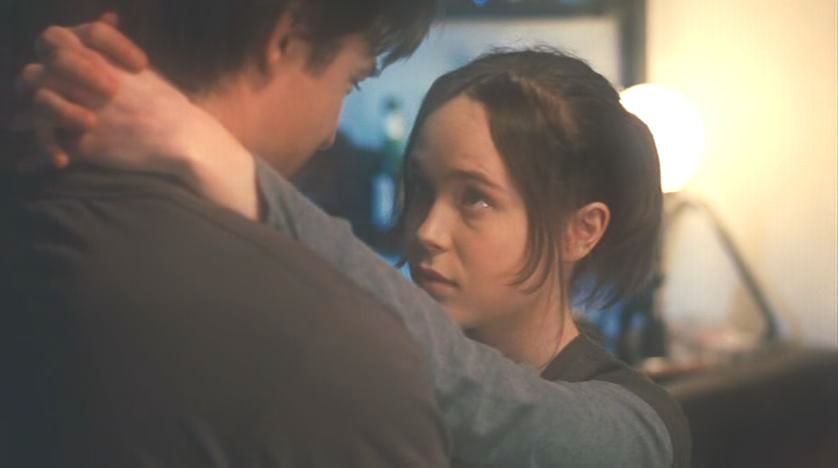

Always Spring
This is the first time I've wanted to write about something I've watched. I finished 'Higehiro' recently, and the story has stuck with me. What follows isn't so much a review, as it is an examination of some of the themes of the show, and what they meant for me. If you haven't watched the show, and think you might want to, be warned that this post will spoil the ending for you.
Yoshida is a 26 year old salaryman living in Tokyo. While walking home depressed and drunk one evening after a rejected love confession to a female co-worker, he meets Sayu, a 17 year old runaway. Sayu offers Yoshida sex in exchange for a night in his apartment, he refuses, but allows her to stay anyway (even though it’s illegal) and in the months following they form a bond.
Over the course of the show, she comes to terms with the reasons she fled home, and he tries to help her get back on her feet, all the while grappling with the morality of his decision to take her in, and refusing her semi-teasing romantic advances. In the first episode, we learn that Sayu has been living like this for a while, exchanging sexual favours with random men for a place to stay, and afraid that she will be kicked back out onto the street again, for a while she continues to offer herself to Yoshida, and he continues to refuse her.
Yoshida meets Sayu under a streetlamp near his home
Although the show follows an arc of discovery of Sayu’s past, and the plot revolves around her actions (and their consequences), Higehiro isn't really about Sayu at all. For me, Higehiro is a story about Yoshida. It’s about him choosing the right path even when it’s inconvenient (or illegal) for him to do so. Even with Sayu’s continued awkward sexual advances in the early episodes, he consistently steps up and surprises the audience with his maturity, his kindness, and his self sacrificing determination to help and protect her.
Last week, I watched an interview with NYU professor Scott Galloway [1], who talks about the struggles of young men in the modern world. Something he said in the interview stuck out for me: “Men need something to protect”, “The role of a man is to be a protector”. However, as he points out in the interview, in this modern world where women can be (and rightly want to be) totally financially self-reliant, men are struggling with what this means.
I think the writer of Higehiro (originally a light novel) recognises this. I think the genre Higehiro falls into is “Protection Fantasy”. This is distinct from a “Damsel in Distress” story, as Higehiro isn’t a power fantasy. At no point during the show did I want to be Yoshida. He lives a lonely life in a small, messy apartment, he’s constantly overworked, and before meeting Sayu he lives day to day on pre-made meals from the convenience store (“Combini”) down the road. In many ways Yoshida is a product of our modern world. He represents young men as they exist today; Lonely, unable to look after themselves properly, and clinging to vices (he smokes a lot during the show) in order to get through his day to day life.
Yoshida refuses, when Sayu offers herself to him in return for letting her stay
Yoshida himself is flawed. He gets angry at ‘Gotou’ the woman who rejects him in the first episode. When she turns him away after agreeing to go out to eat with him. He shouts at her, “Why would you agree to come here if you were just going to reject me?” he proclaims, to which her answer is because she wanted to talk, she just wanted someone to share a drink with. Gotou too, is lonely.
In the dramatic climax, Yoshida accompanies Sayu back to her home in Hokkaido, encounters her mother, who is completely unhinged, (and very well written, her character really deserves a separate write-up) and parts with Sayu. In a very emotional scene at the airport, Sayu tells Yoshida that she is in love with him, and asks him to wait for her to graduate, and for her to come back to live with him in Tokyo. Yoshida (and the viewer) desperately wants to say yes, but he surprises us by telling Sayu that she needs to live her own life, much like he must live his. It’s a beautiful scene where, the audience is denied the romantic ending the show had lead them to believe they were getting, however in its place Yoshida shows us his maturity. Shows us how to step up and take responsibility for ourselves and others. Yoshida sets an example of masculinity that instead of glorifying sexual conquest and physical power, displays self-sacrifice, and emotional maturity.
Sayu and Yoshida say goodbye in Hokkaido
The bond between Yohsida and Sayu reminds me of the relationship between Juno and Mark in the Movie Juno. Juno, a pregnant teen, forms a semi-romantic relationship with the man she arranges to be her baby's adoptive father. To Juno, Mark represents everything missing in her peers. He is intelligent and successful, he likes the same music & movies she does, and is able to connect with her on topics her classmates aren't quite ready to address. To Mark, Juno represents a time of his life he wishes he could have back, and is swept up by her surprising maturity, and willingness to engage with him. I feel the character of Yoshida is stronger than that of Mark, maybe even unrealistcally so. However, for me Yoshida represents an ideal, he displays an emotional intelligence & self control that all men should aspire to gain. While Mark ends up hurting Juno by confiding in her too much, Yoshida recognises that although Sayo may feel like a peer at times, the age gap is significant enough for him to have to set boundaries. He recognises and respects Sayu's vulnerabilities while Mark fails to recognise (or willingly fails to ackgnowledge) them in Juno.

Juno dances with Mark
If you’ve never watched an ‘Anime’ before, I wouldn’t recommend watching Higehiro solely from reading this. As with much Japanese media, it suffers from a need to provide its audience with ‘fan service’, the camera often sexualises the female characters. In the first episode, we are repeatedly shown shots of Sayu’s underwear for no reason other than to cater to a larger audience (lonely horny men, which I disappointingly assume exists in abundance). I feel that these kinds of anime tropes are exploitative of men in the long term. I long for an anime free of this kind of motif.
It also sometimes suffers from clumsy writing. In one episode Sayu simply forgives a man who previously attempted to rape her and continues to work with him, which trivialises the events of the (very good) previous episode.
However, if these clumsy moments are few enough for you to look past, I promise that a gem lies hidden behind them.
In the final episode, Yoshida returns to his empty apartment, where he finds a hand-written notebook of “easy to prepare recipes” that Sayu left for him. He prepares Miso soup, a meal Sayu often cooked for him during her stay. After tasting it, he collapses into tears. “Perhaps I am the real child here,” he says to himself, as the camera pans out to a view of the lonely apartment complex where he lives.
Yoshida cries when he tastes Sayu's soup recipe after returning from Hokkaido
Higehiro is (at the time of writing) available for streaming on Crunchyroll. I wish you happy viewing.
https://www.crunchyroll.com/series/GXJHM3NW5/higehiro-after-being-rejected-i-shaved-and-took-in-a-high-school-runaway